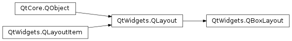

QBoxLayout¶
Inherited by: QHBoxLayout, QVBoxLayout
Synopsis¶
Functions¶
- def
addLayout(layout[, stretch=0]) - def
addSpacerItem(spacerItem) - def
addSpacing(size) - def
addStretch([stretch=0]) - def
addStrut(arg__1) - def
addWidget(arg__1[, stretch=0[, alignment=Qt.Alignment()]]) - def
direction() - def
insertItem(index, arg__2) - def
insertLayout(index, layout[, stretch=0]) - def
insertSpacerItem(index, spacerItem) - def
insertSpacing(index, size) - def
insertStretch(index[, stretch=0]) - def
insertWidget(index, widget[, stretch=0[, alignment=Qt.Alignment()]]) - def
setDirection(arg__1) - def
setStretch(index, stretch) - def
setStretchFactor(l, stretch) - def
setStretchFactor(w, stretch) - def
stretch(index)
Detailed Description¶
The
PySide2.QtWidgets.QBoxLayoutclass lines up child widgets horizontally or vertically.
PySide2.QtWidgets.QBoxLayouttakes the space it gets (from its parent layout or from thePySide2.QtWidgets.QLayout.parentWidget()), divides it up into a row of boxes, and makes each managed widget fill one box.
If the
PySide2.QtWidgets.QBoxLayout‘s orientation isQt.Horizontalthe boxes are placed in a row, with suitable sizes. Each widget (or other box) will get at least its minimum size and at most its maximum size. Any excess space is shared according to the stretch factors (more about that below).
If the
PySide2.QtWidgets.QBoxLayout‘s orientation isQt.Vertical, the boxes are placed in a column, again with suitable sizes.The easiest way to create a
PySide2.QtWidgets.QBoxLayoutis to use one of the convenience classes, e.g.PySide2.QtWidgets.QHBoxLayout(forQt.Horizontalboxes) orPySide2.QtWidgets.QVBoxLayout(forQt.Verticalboxes). You can also use thePySide2.QtWidgets.QBoxLayoutconstructor directly, specifying its direction asLeftToRight,RightToLeft,TopToBottom, orBottomToTop.If the
PySide2.QtWidgets.QBoxLayoutis not the top-level layout (i.e. it is not managing all of the widget’s area and children), you must add it to its parent layout before you can do anything with it. The normal way to add a layout is by calling parentLayout->PySide2.QtWidgets.QBoxLayout.addLayout().Once you have done this, you can add boxes to the
PySide2.QtWidgets.QBoxLayoutusing one of four functions:
PySide2.QtWidgets.QBoxLayout.addWidget()to add a widget to thePySide2.QtWidgets.QBoxLayoutand set the widget’s stretch factor. (The stretch factor is along the row of boxes.)PySide2.QtWidgets.QBoxLayout.addSpacing()to create an empty box; this is one of the functions you use to create nice and spacious dialogs. See below for ways to set margins.PySide2.QtWidgets.QBoxLayout.addStretch()to create an empty, stretchable box.PySide2.QtWidgets.QBoxLayout.addLayout()to add a box containing anotherPySide2.QtWidgets.QLayoutto the row and set that layout’s stretch factor.Use
PySide2.QtWidgets.QBoxLayout.insertWidget(),PySide2.QtWidgets.QBoxLayout.insertSpacing(),PySide2.QtWidgets.QBoxLayout.insertStretch()orPySide2.QtWidgets.QBoxLayout.insertLayout()to insert a box at a specified position in the layout.
PySide2.QtWidgets.QBoxLayoutalso includes two margin widths:
PySide2.QtWidgets.QLayout.setContentsMargins()sets the width of the outer border on each side of the widget. This is the width of the reserved space along each of thePySide2.QtWidgets.QBoxLayout‘s four sides.PySide2.QtWidgets.QBoxLayout.setSpacing()sets the width between neighboring boxes. (You can usePySide2.QtWidgets.QBoxLayout.addSpacing()to get more space at a particular spot.)The margin default is provided by the style. The default margin most Qt styles specify is 9 for child widgets and 11 for windows. The spacing defaults to the same as the margin width for a top-level layout, or to the same as the parent layout.
To remove a widget from a layout, call
PySide2.QtWidgets.QLayout.removeWidget(). CallingQWidget.hide()on a widget also effectively removes the widget from the layout untilQWidget.show()is called.You will almost always want to use
PySide2.QtWidgets.QVBoxLayoutandPySide2.QtWidgets.QHBoxLayoutrather thanPySide2.QtWidgets.QBoxLayoutbecause of their convenient constructors.
-
class
PySide2.QtWidgets.QBoxLayout(arg__1[, parent=nullptr])¶ Parameters: - arg__1 –
PySide2.QtWidgets.QBoxLayout.Direction - parent –
PySide2.QtWidgets.QWidget
Constructs a new
PySide2.QtWidgets.QBoxLayoutwith directiondirand parent widgetparent.- arg__1 –
-
PySide2.QtWidgets.QBoxLayout.Direction¶ This type is used to determine the direction of a box layout.
Constant Description QBoxLayout.LeftToRight Horizontal from left to right. QBoxLayout.RightToLeft Horizontal from right to left. QBoxLayout.TopToBottom Vertical from top to bottom. QBoxLayout.BottomToTop Vertical from bottom to top.
-
PySide2.QtWidgets.QBoxLayout.addLayout(layout[, stretch=0])¶ Parameters: - layout –
PySide2.QtWidgets.QLayout - stretch –
PySide2.QtCore.int
Adds
layoutto the end of the box, with serial stretch factorstretch.See also
PySide2.QtWidgets.QBoxLayout.insertLayout()PySide2.QtWidgets.QBoxLayout.addItem()PySide2.QtWidgets.QBoxLayout.addWidget()- layout –
-
PySide2.QtWidgets.QBoxLayout.addSpacerItem(spacerItem)¶ Parameters: spacerItem – PySide2.QtWidgets.QSpacerItemAdds
spacerItemto the end of this box layout.
-
PySide2.QtWidgets.QBoxLayout.addSpacing(size)¶ Parameters: size – PySide2.QtCore.intAdds a non-stretchable space (a
PySide2.QtWidgets.QSpacerItem) with sizesizeto the end of this box layout.PySide2.QtWidgets.QBoxLayoutprovides default margin and spacing. This function adds additional space.See also
PySide2.QtWidgets.QBoxLayout.insertSpacing()PySide2.QtWidgets.QBoxLayout.addItem()PySide2.QtWidgets.QSpacerItem
-
PySide2.QtWidgets.QBoxLayout.addStretch([stretch=0])¶ Parameters: stretch – PySide2.QtCore.intAdds a stretchable space (a
PySide2.QtWidgets.QSpacerItem) with zero minimum size and stretch factorstretchto the end of this box layout.See also
PySide2.QtWidgets.QBoxLayout.insertStretch()PySide2.QtWidgets.QBoxLayout.addItem()PySide2.QtWidgets.QSpacerItem
-
PySide2.QtWidgets.QBoxLayout.addStrut(arg__1)¶ Parameters: arg__1 – PySide2.QtCore.intLimits the perpendicular dimension of the box (e.g. height if the box is
LeftToRight) to a minimum ofsize. Other constraints may increase the limit.See also
PySide2.QtWidgets.QBoxLayout.addItem()
-
PySide2.QtWidgets.QBoxLayout.addWidget(arg__1[, stretch=0[, alignment=Qt.Alignment()]])¶ Parameters: - arg__1 –
PySide2.QtWidgets.QWidget - stretch –
PySide2.QtCore.int - alignment –
PySide2.QtCore.Qt.Alignment
Adds
widgetto the end of this box layout, with a stretch factor ofstretchand alignmentalignment.The stretch factor applies only in the
PySide2.QtWidgets.QBoxLayout.direction()of thePySide2.QtWidgets.QBoxLayout, and is relative to the other boxes and widgets in thisPySide2.QtWidgets.QBoxLayout. Widgets and boxes with higher stretch factors grow more.If the stretch factor is 0 and nothing else in the
PySide2.QtWidgets.QBoxLayouthas a stretch factor greater than zero, the space is distributed according to thePySide2.QtWidgets.QWidget:sizePolicy() of each widget that’s involved.The alignment is specified by
alignment. The default alignment is 0, which means that the widget fills the entire cell.See also
PySide2.QtWidgets.QBoxLayout.insertWidget()PySide2.QtWidgets.QBoxLayout.addItem()PySide2.QtWidgets.QBoxLayout.addLayout()PySide2.QtWidgets.QBoxLayout.addStretch()PySide2.QtWidgets.QBoxLayout.addSpacing()PySide2.QtWidgets.QBoxLayout.addStrut()- arg__1 –
-
PySide2.QtWidgets.QBoxLayout.direction()¶ Return type: PySide2.QtWidgets.QBoxLayout.DirectionReturns the direction of the box.
PySide2.QtWidgets.QBoxLayout.addWidget()andPySide2.QtWidgets.QBoxLayout.addSpacing()work in this direction; the stretch stretches in this direction.See also
PySide2.QtWidgets.QBoxLayout.setDirection()QBoxLayout.DirectionPySide2.QtWidgets.QBoxLayout.addWidget()PySide2.QtWidgets.QBoxLayout.addSpacing()
-
PySide2.QtWidgets.QBoxLayout.insertItem(index, arg__2)¶ Parameters: - index –
PySide2.QtCore.int - arg__2 –
PySide2.QtWidgets.QLayoutItem
Inserts
iteminto this box layout at positionindex. Ifindexis negative, the item is added at the end.See also
PySide2.QtWidgets.QBoxLayout.addItem()PySide2.QtWidgets.QBoxLayout.insertWidget()PySide2.QtWidgets.QBoxLayout.insertLayout()PySide2.QtWidgets.QBoxLayout.insertStretch()PySide2.QtWidgets.QBoxLayout.insertSpacing()- index –
-
PySide2.QtWidgets.QBoxLayout.insertLayout(index, layout[, stretch=0])¶ Parameters: - index –
PySide2.QtCore.int - layout –
PySide2.QtWidgets.QLayout - stretch –
PySide2.QtCore.int
Inserts
layoutat positionindex, with stretch factorstretch. Ifindexis negative, the layout is added at the end.layoutbecomes a child of the box layout.- index –
-
PySide2.QtWidgets.QBoxLayout.insertSpacerItem(index, spacerItem)¶ Parameters: - index –
PySide2.QtCore.int - spacerItem –
PySide2.QtWidgets.QSpacerItem
Inserts
spacerItemat positionindex, with zero minimum size and stretch factor. Ifindexis negative the space is added at the end.- index –
-
PySide2.QtWidgets.QBoxLayout.insertSpacing(index, size)¶ Parameters: - index –
PySide2.QtCore.int - size –
PySide2.QtCore.int
Inserts a non-stretchable space (a
PySide2.QtWidgets.QSpacerItem) at positionindex, with sizesize. Ifindexis negative the space is added at the end.The box layout has default margin and spacing. This function adds additional space.
- index –
-
PySide2.QtWidgets.QBoxLayout.insertStretch(index[, stretch=0])¶ Parameters: - index –
PySide2.QtCore.int - stretch –
PySide2.QtCore.int
Inserts a stretchable space (a
PySide2.QtWidgets.QSpacerItem) at positionindex, with zero minimum size and stretch factorstretch. Ifindexis negative the space is added at the end.- index –
-
PySide2.QtWidgets.QBoxLayout.insertWidget(index, widget[, stretch=0[, alignment=Qt.Alignment()]])¶ Parameters: - index –
PySide2.QtCore.int - widget –
PySide2.QtWidgets.QWidget - stretch –
PySide2.QtCore.int - alignment –
PySide2.QtCore.Qt.Alignment
Inserts
widgetat positionindex, with stretch factorstretchand alignmentalignment. Ifindexis negative, the widget is added at the end.The stretch factor applies only in the
PySide2.QtWidgets.QBoxLayout.direction()of thePySide2.QtWidgets.QBoxLayout, and is relative to the other boxes and widgets in thisPySide2.QtWidgets.QBoxLayout. Widgets and boxes with higher stretch factors grow more.If the stretch factor is 0 and nothing else in the
PySide2.QtWidgets.QBoxLayouthas a stretch factor greater than zero, the space is distributed according to thePySide2.QtWidgets.QWidget:sizePolicy() of each widget that’s involved.The alignment is specified by
alignment. The default alignment is 0, which means that the widget fills the entire cell.- index –
-
PySide2.QtWidgets.QBoxLayout.setDirection(arg__1)¶ Parameters: arg__1 – PySide2.QtWidgets.QBoxLayout.DirectionSets the direction of this layout to
direction.
-
PySide2.QtWidgets.QBoxLayout.setStretch(index, stretch)¶ Parameters: - index –
PySide2.QtCore.int - stretch –
PySide2.QtCore.int
Sets the stretch factor at position
index. tostretch.- index –
-
PySide2.QtWidgets.QBoxLayout.setStretchFactor(w, stretch)¶ Parameters: - w –
PySide2.QtWidgets.QWidget - stretch –
PySide2.QtCore.int
Return type: PySide2.QtCore.boolSets the stretch factor for
widgettostretchand returns true ifwidgetis found in this layout (not including child layouts); otherwise returnsfalse.- w –
-
PySide2.QtWidgets.QBoxLayout.setStretchFactor(l, stretch) Parameters: - l –
PySide2.QtWidgets.QLayout - stretch –
PySide2.QtCore.int
Return type: PySide2.QtCore.boolThis is an overloaded function.
Sets the stretch factor for the layout
layouttostretchand returnstrueiflayoutis found in this layout (not including child layouts); otherwise returnsfalse.- l –
-
PySide2.QtWidgets.QBoxLayout.stretch(index)¶ Parameters: index – PySide2.QtCore.intReturn type: PySide2.QtCore.intReturns the stretch factor at position
index.
© 2018 The Qt Company Ltd. Documentation contributions included herein are the copyrights of their respective owners. The documentation provided herein is licensed under the terms of the GNU Free Documentation License version 1.3 as published by the Free Software Foundation. Qt and respective logos are trademarks of The Qt Company Ltd. in Finland and/or other countries worldwide. All other trademarks are property of their respective owners.